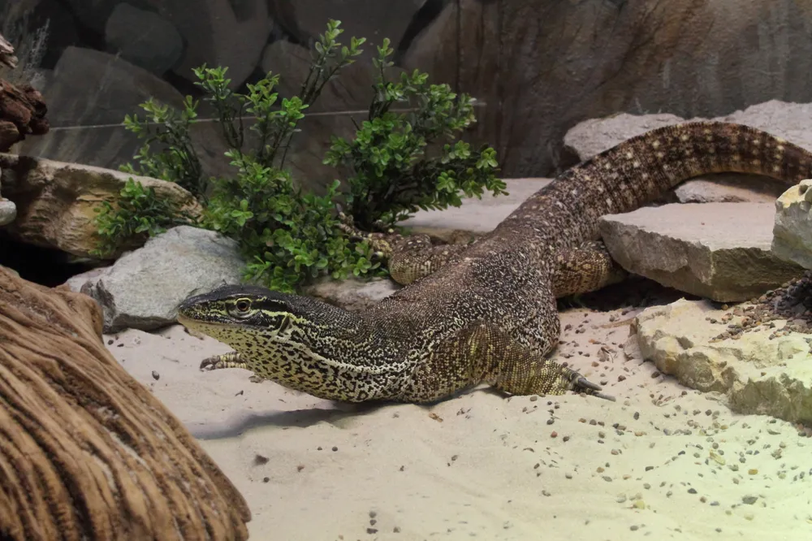

알거스 모니터

종 소개
알거스모니터(Varanus panoptes)는 파푸아뉴기니 남부와 호주 북부에 서식하는 대형 왕도마뱀이다. 등과 꼬리에 노란색 반점이 나타나는 것이 특징이며, 호기심이 많고 활동성이 뛰어난 종으로 알려져 있다.
- 학명 : Varanus panoptes
- 분포 : 호주 북부, 파푸아뉴기니 남부
- 성격 : 활발하고 탐구심이 강함
- 특징 : 긴 꼬리, 뛰어난 운동능력, 높은 지능
- 수명 : 약 15~20년
알거스모니터의 특징
■ 대형종
- 수컷 성체 : 120~150cm
- 암컷 성체 : 약 100cm
- 베이비 : 25~30cm
성체가 되면 상당한 공간을 필요로 하는 대형 모니터이다.
■ 다양한 색상과 무늬
개체마다 무늬 패턴이 다르며, 꼬리부터 이어지는 노란색 스팟이 특징이다. 베이비 시기에는 무늬가 더욱 선명하고 밝게 나타난다.
■ 독특한 행동
- 왕성한 활동성
- 높은 호기심
- 트라이포딩(뒷다리로 서는 행동)
- 뛰어난 사냥 본능
■ 식성
육식성으로 다음과 같은 먹이를 섭취한다.
- 귀뚜라미, 밀웜, 바퀴류 등 곤충
- 메추리
- 생선
- 설치류
- 기타 소형 척추동물
초보자를 위한 사육 가이드
사육 난이도
★★★★☆
알거스모니터는 비교적 온순한 개체도 있으나 매우 활동적이고 성장 속도가 빠른 대형종이다. 충분한 공간과 꾸준한 관리가 필요하므로, 대형 도마뱀 사육 경험이 없는 초보자라면 장기적인 계획을 세우고 입문하는 것이 좋다.
1. 사육장
베이비
최소 몸길이의 3~6배 이상 확보하는 것이 좋다.
성체
대형종이므로 최소 4자 이상의 사육장보다는, 가능하다면 더 넓은 공간을 제공하는 것이 바람직하다.
권장 사항
- 넓은 바닥 면적 확보
- 은신처 설치
- 큰 물그릇 준비
- 튼튼한 유목과 바위 배치
2. 온도
- 핫스팟(바스킹) : 35℃ 이상
- 주간 온도 : 29~32℃
- 야간 온도 : 약 23℃
18℃ 이하로 장기간 떨어지지 않도록 관리하는 것이 좋다.
3. 습도
권장 습도 : 60~80%
- 바닥재에 수분 유지
- 큰 물그릇 설치
- 필요 시 분무를 통해 습도 조절
4. 조명
- 하루 10시간 이상 점등
- 바스킹 램프 필수
- UVB 조명 사용 권장
규칙적인 낮·밤 주기를 유지해 주는 것이 중요하다.
5. 바닥재
두껍게 깔아주는 것이 좋으며, 굴을 파는 행동을 고려해 충분한 깊이를 확보한다.
사용 가능한 바닥재
- 흙
- 코코피트
- 바크
- 혼합 바닥재
또한 큰 돌이나 유목을 배치해 자연스러운 환경을 조성해 주면 활동성과 탐색 행동을 유도할 수 있다.
6. 먹이 급여
베이비
- 귀뚜라미
- 바퀴류
- 밀웜
- 실크웜
주 5~7회 소량씩 급여
아성체~성체
- 메추리
- 생선
- 설치류
- 곤충류
주 2~4회 적절한 양을 급여한다.
칼슘제와 비타민 보충제를 주기적으로 사용하는 것이 도움이 된다.
7. 핸들링과 테이밍
알거스모니터는 지능이 높고 사람을 인식하지만, 일반적으로 들어 올려지는 것을 좋아하지 않는다.
테이밍 요령
- 먹이를 통해 긍정적인 경험 제공
- 강제로 잡지 않기
- 천천히 접근하기
- 사육장 밖에서 함께 탐색할 시간 마련하기
- 꾸준하게 동일한 방식으로 교감하기
테이밍된 개체는 사람에게 비교적 온순해질 수 있으나, 성격 차이가 있으므로 무리한 핸들링은 피하는 것이 좋다.
주의사항
- 알거스모니터는 매우 빠르고 힘이 강한 대형종이므로, 성체가 되었을 때의 크기와 활동성을 충분히 고려한 뒤 입양해야 한다.
- 성장과 함께 필요한 사육 공간, 먹이 비용, 전기 비용 등이 크게 증가할 수 있으므로 장기적인 유지 계획이 필요하다.
- 좁은 사육장이나 부족한 운동 공간은 스트레스와 이상 행동의 원인이 될 수 있으므로 충분한 바닥 면적을 확보해야 한다.
- 바스킹 온도와 UVB 환경이 적절하지 않을 경우 소화 불량이나 대사성 골질환(MBD) 등의 건강 문제가 발생할 수 있다.
- 개체에 따라 방어적인 성향을 보일 수 있으며, 발톱과 이빨이 날카로워 무리한 핸들링은 부상의 원인이 될 수 있다.
- 핸들링 시 강제로 붙잡거나 꼬리를 잡아당기는 행동은 심한 스트레스를 유발할 수 있으므로 피해야 한다.
- 과도한 먹이 급여는 비만과 지방간 등의 건강 문제를 유발할 수 있으므로 균형 잡힌 식단과 적절한 급여량을 유지해야 한다.
- 먹이를 급여할 때 손을 먹이로 오인하여 물 수 있으므로, 핀셋이나 먹이 집게를 사용하는 것이 안전하다.
- 어린아이나 다른 반려동물과 함께 있을 때는 예상치 못한 사고가 발생할 수 있으므로 항상 보호자의 감독이 필요하다.
- 본 정보는 일반적인 사육 가이드이며, 개체의 상태와 환경에 따라 적절한 관리 방법은 달라질 수 있다.
입문 전 체크사항
- 15~20년 이상 함께할 수 있는가?
- 성체가 1m 이상 성장한다는 점을 감당할 수 있는가?
- 넓은 사육 공간을 마련할 수 있는가?
- 지속적인 먹이 공급과 전기 비용을 감당할 수 있는가?
- 매일 관찰과 관리에 시간을 투자할 수 있는가?
추천 매장
-
더사파리(The Safari)
알거스 모니터 베이비 및 아성체 개체를 취급하는 부산 파충류 전문샵.
상품 페이지 바로가기 -
뉴런렙타일(Newrun Reptile)
알거스모니터 베이비 개체를 취급하는 파충류 전문 매장.
상품 페이지 바로가기 -
렙타일킹(Reptile King)
준성체 알거스 모니터를 취급하며 다양한 파충류를 분양하는 전문샵.
상품 페이지 바로가기
※ 참고
생물의 재고와 분양 가능 여부는 수시로 변동될 수 있으므로, 방문 또는
구매 전 매장에 문의하여 현재 개체 상태와 재고를 확인하는 것을
권장한다.